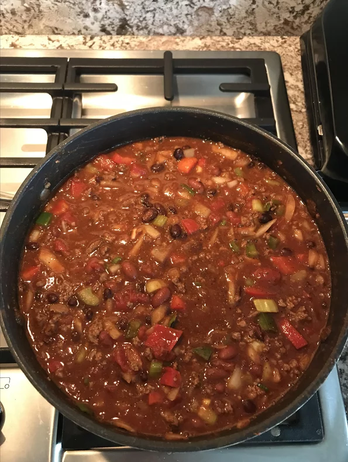

Chili

Chili recipe
This Chili is the best.
- 2 pounds ground beef chuck
- 1 pound bulk Italian sausage
- 3 (15 ounce) cans chili beans, drained
- 1 (15 ounce) can chili beans in spicy sauce
- 2 (28 ounce) cans diced tomatoes with juice
- 1 (6 ounce) can tomato paste
- 1 large yellow onion, chopped
- 1 green bell pepper, seeded and chopped
- 1 red bell pepper, seeded and chopped
- 2 green chile peppers, seeded and chopped
- 1 tablespoon bacon bits
- 4 cubes beef bouillon
- ¼ cup chili powder
- 1 tablespoon Worcestershire sauce
- 1 tablespoon minced garlic
Steps
- Crumble the ground chuck and sausage into the hot pan
-
Pour in the chili beans, spicy chili beans, diced tomatoes and tomato
paste.
-
Add the onion, celery, green and red bell peppers, chile peppers, bacon
bits, bouillon,
-
Season with chili powder, Worcestershire sauce, garlic, oregano, cumin,
hot pepper sauce, basil, salt, pepper, cayenne, paprika, and sugar.
-
cover and simmer over low heat for at least 2 hours, stirring
occasionally.